Texto 07 – Sistemas de informações Geográficas (SIGs): Sensoriamento remoto e novas
tecnologias.
Conteúdo: Sensoriamento remoto, imagens de satélite, Cartografia digital,
Geoprocessamento.
Objetivo: Compreender o papel estratégico da Cartografia diante das novas
tecnologias de informações Geográficas (SIGs).
Digite seu nome
Introdução
Na aula passada, aprendemos como as projeções
cartográficas são importantes para transmitir as informações sobre o Planeta, mesmo tendo as distorções,
seja na projeção cilíndrica, plana ou cônica.
Na aula de hoje, veremos como o avanço da tecnologia abriram novos oportunidades para a
Cartografia através da internet, dos satélites, e aprofundaram o conhecimento do espaço geográfico nunca
visto na história.
Vamos estudar parte do grande sistema de informações geográficas, que incluem: GPS, imagens
de satélites, fotografias aéreas, Google Earth, dentre outros.
Questões para serem respondidas no caderno sobre o tema da aula de hoje:
1. O que são Sistemas de Informações Geográficas (SIGs)?
2. Como a tecnologia tem contribuído para a evolução da Cartografia?
3. Explique o que é sensoriamento remoto e como ele funciona.
4. Quais são os três tipos de tecnologias que compõem os SIGs?
5. Qual é a diferença entre sensoriamento remoto passivo e ativo?
6. Como as imagens de satélites são transformadas em imagens coloridas?
7. Qual é a importância do GPS na coleta de dados geográficos?
8. Quais são as principais aplicações do GPS mencionadas no texto?
9. O que é o projeto CBERS e qual é a sua finalidade?
10. Como os SIGs são utilizados no planejamento urbano e na administração pública?
A era dos Sistemas de Informações Geográficas
Hoje é possível entrar no site do Google Earth não apenas para localizar casas, ruas ou
prédios, mas sim realizar voos virtuais, projetos 3D com programas de modelagem, como Blender, por exemplo.
Cada ponto da Terra possui uma localização com coordenadas geográficas e informações adicionais de altura e
profundidade.
Sistemas de informações Geográficas - Conhecidos também como SIGs são equipamentos e meios
tecnológicos para se estudar o espaço terrestre. São utilizados por pesquisadores, empresas, ONGs, governos,
serviços de inteligência, entre outros.
Os aparelhos eletrônicos receptores imitam o olho humano, que também é um sensor. Como
também será visto na disciplina de Física, todo corpo emite radiação eletromagnética. Entretanto, não
conseguimos enxergar essas radiações, pois a maioria não são visíveis à visão humana, conforme figura abaixo.
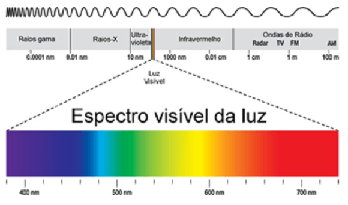
Fonte: Wikipedia.
De todo tipo de comprimentos de ondas existentes, só conseguimos ver uma parte bem
pequena, entre o ultravioleta e o infravermelho.
O estudo desse espectro gerou diversos aparelhos eletrônicos, como controles remotos,
câmeras fotográficas, dentro outros. Vamos estudar alguns deles, os SIGs, que, por sua vez, resultam da
combinação entre três tipos de tecnologias distintos: O sensoriamento remoto, o GPS e o geoprocessamento.
Como funciona o Sensoriamento remoto?
Remoto significa distante, por isso o os sensores que antes eram acoplados em balões
meteorológicos, como na primeira imagem da Terra do espaço na década de 1960, são instalados em uma rede de
satélites ao redor da Terra.
Sensoriamento remoto - Consiste na captação de
informações através de sensores instalados em satélites artificiais, aeronaves ou até balões. Obtêm-se
imagens e dados da superfície terrestre pela captação e registro da energia refletida/emitida pela
superfície, sem que haja contato físico entre o sensor e a
superfície estudada.
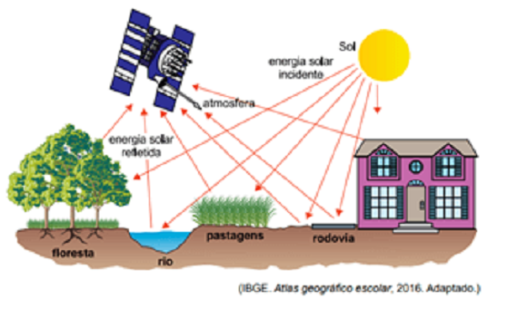
Fonte: ibge.gov.br.
Quando a radiação entra em contato com a superfície da Terra, ela pode ser absorvida,
refletida ou transmitidas (no caso de objetos transparentes). Os cientistas podem medir o grau de energia
que refletiu em uma folha de árvore, por exemplo, o que eles denominam reflectância.
Dependendo da composição atômica e das propriedades do objeto (sólido, líquido ou gasoso)
podemos saber se estamos lidando com uma imagem de um rio, um terreno ou de casas, isso porque cada objeto
possui uma assinatura espectral, ou seja, a variação da reflectância para os diversos comprimentos de onda.
Na figura abaixo , há um
esquema de sensoriamento remoto passivo. O sol ilumina a superfície, a radiação atinge a Terra e é refletida
parar o espaço e, por isso, pode ser captado pelo sensor que está a bordo de um satélite. O sensor
retransmite essas informações para uma antena parabólicas programadas para rastrear esse tipo de satélite.
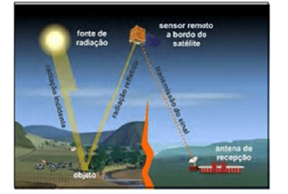
Fonte: Fonte: Sausen (2008, p.11.)
Eles são úteis para analisar fenômenos como queimadas, ilhas de calor, inundação, avaliar
danos causados por vendavais, furações, dentre outros.
Por outro lado, há uma forma mais ativa de captar imagens da superfície da Terra. Pode-se
acoplar um radar em um avião ou satélite que emite micro-ondas, que por sua vez, são refletidas de volta
pela Terra, permitindo o registro de uma região do espaço geográfico.
Veja:
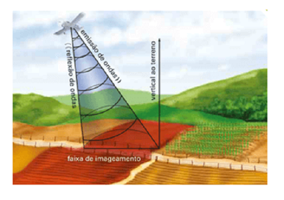
Fonte: Fonte: Moreira e Sene (2016, p.82).
As vantagens do sistema que emite micro-ondas estão relacionadas a menor interferência das
nuvens do que as ondas do espectro visível e infravermelho, o que possibilita registrar imagens com o radar
mesmo em dias nublados ou à noite, áreas alagadas, derrames de óleo na água do mar.
O que para o sistema passivo seria um pouco mais difícil, pois dependeria das condições
atmosféricas da região naquele momento.
Principais usos para o sensoriamento remoto
Tanto as fotos tiradas por aviões como as dos satélites e radares são fundamentais para a
produção de mapas, cartas e plantas detalhados dos aspectos físicos e humanos da superfície terrestre,
vejamos:
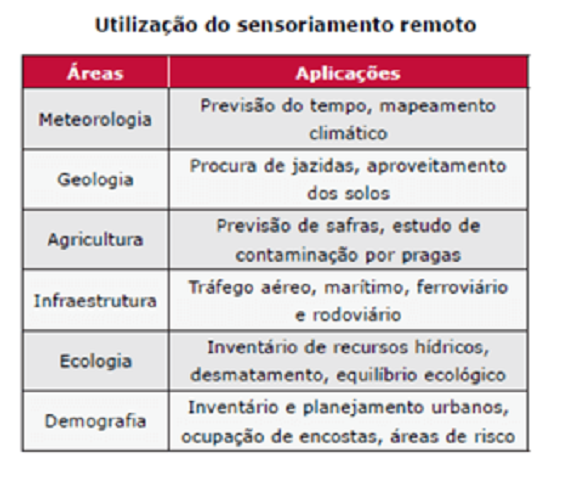
As imagens aéreas e de satélites
Imagens aéreas
O resultado de todo esse sistema técnico integrado resulta em diversas imagens sobre a
superfície terrestre. Antes as fotos aéreas eram tiradas a partir de balões, ainda no século XIX.
Entretanto, progrediu muito na época da Segunda Guerra Mundial (1939-1945) com o uso de
aviões.
As câmeras, hoje, digitais e acopladas na parte de baixo do avião, tiram fotos a intervalos
regulares e em velocidade constante da aeronave. Esse processo é chamado de
aerofotogrametria.
As fotografias possuem uma superposição em relação à anterior de cerca de 60%, ou seja,
tiram três fotos e após isso verificam os elementos comuns entre as fotografias centrais. Esse processo
objetiva melhorar a qualidade das imagens.
As escalas das fotos
são determinas de acordo com os objetivos. Para cadastros urbanos, utilizam voos mais baixos e escala de
1:4.000 até 1:10.000. Já para áreas rurais são realizados voos mails altos e escalas de 1:15.000 até
1:40.000.
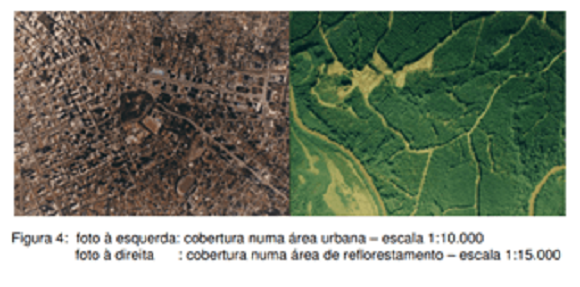
Fonte: Fonte: www.topografia.ufba.br.
Atualmente, a maioria dos mapas topográficos são produzidos com fotografias aéreas, pois
são mais baratas e bastante detalhadas. Entretanto, as imagens de satélites não ficam para trás nesse
quesito.
Imagens de satélites
Nada da Terra azul e cheia de cores que tão bem conhecemos - mesmo sem nunca termos visto
de verdade -, a primeira imagem registrada de nosso planeta do espaço foi esta fotografia em branco e preto
e granulada.
Tirada em 24 de outubro de 1946, foi produzida por uma câmera de cinema acoplada a um
míssil V2 lançado da base de White Sands no Novo México, Estados Unidos.
Várias fotografias
foram capturadas a 65 milhas de altitude, ou cerca de 104 km. A câmera registrava uma foto a cada 1,5
segundo.(Fonte: Revista Galileu)
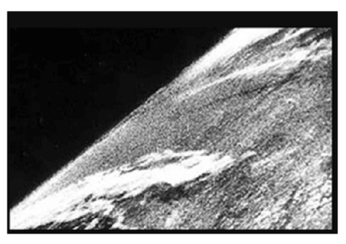
Fonte: Revista Galileu.
Os primeiros a lançarem um satélite em órbita terrestre foram os russos com o Sputnik I
(satélite em russo) em 1957. Porém ele só enviava um sinal sonoro.
A primeira missão tripulada também foi mérito russo em 1961 com a nave Vostok 1 (oriente em
russo). A bordo esta Yuri Gagarin, o primeiro ser humano a observar a Terra do espaço e a pronunciar a
famosa frase: “A Terra é azul”.
A partir de então, a chamada corrida espacial foi iniciada, isto é, a competição
tecnológica entre os Estados Unidos e a antiga União Soviética duraria até a queda do muro de Berlim.
(assunto que veremos mais adiante).
Após a viagem da Apollo 11 à Lua em 1969, muitos outros satélites foram enviados a órbita
terrestre, dentre eles o LANDSAT em 1972.
Características das imagens de satélites
Originalmente, as imagens de satélites são obtidas em preto e branco. Porém, O olho humano
é mais sensível a cores que aos tons de cinza. As cores que podemos ver é fruto da reflexão seletiva dos
alvos existentes na superfície terrestre, nas distintas bandas do espectro eletromagnético.
Assim, para facilitar a interpretação visual dos dados de sensoriamento, são associadas
cores aos tons de cinza, criando-se desta forma uma imagem de satélite colorida.
Ela é resultante da combinação das três cores
básicas (azul, verde e vermelho)
associadas, por meio de recursos computacionais, às imagens individuais obtidas em diferentes comprimentos
de onda ou faixas espectrais. Este é o mesmo mecanismo da visão a cores nos seres humanos.
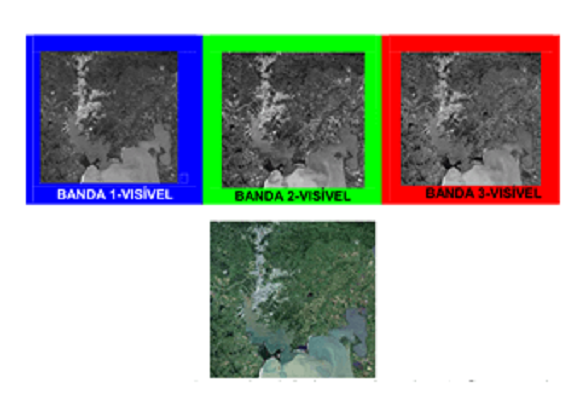
Fonte (STEFFEN, 2021). Imagem da cidade de Porto
Alegre, lago Guaíba.
Diversos países possuem satélites que rastreiam permanentemente a órbita terrestre, dentre
eles: a agência espacial europeia (ESA), a canadense Radarsat, a francesa Spot, a Sino-Brasileira CBERS , dentre outras.
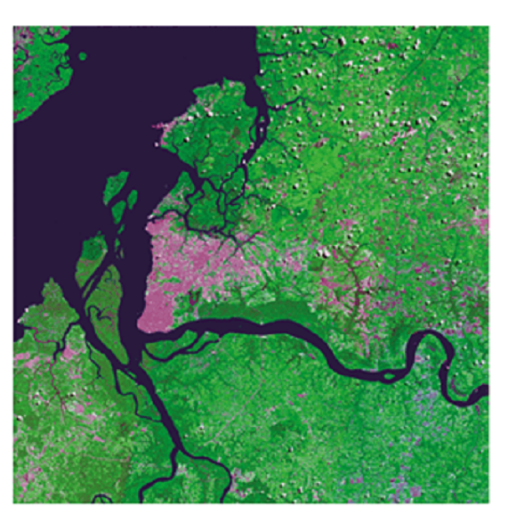
Fonte: http://www.cbers.inpe.br/.
O projeto CBERS é o resultado de um sistema de cooperação entre o Brasil e a China.
Desenvolvido pelo Instituto Nacional de Pesquisas Espaciais – INPE e a CAST (Academia Chinesa de Tecnologia
Espacial) em 1999. Atualmente está em operação o CBERS-4.
Os satélites CBERS, se destinam a monitoração do clima, projetos de sistematização e uso da
terra, gerenciamento de recursos hídricos, arrecadação fiscal, imagens para licenciamento e monitoramento
ambiental, entre outras aplicações.
Suas imagens são utilizadas no Brasil, por empresas privadas e instituições como Ibama,
Incra, Petrobras, Aneel, Embrapa e secretarias de Fazenda e Meio Ambiente.
A grande vantagem do uso de imagens de satélites está ligada ao monitoramento de eventos ao
longo do tempo. As imagens podem ser
registradas em intervalos regulares, como o registro de nuvens em diferentes horários do dia.
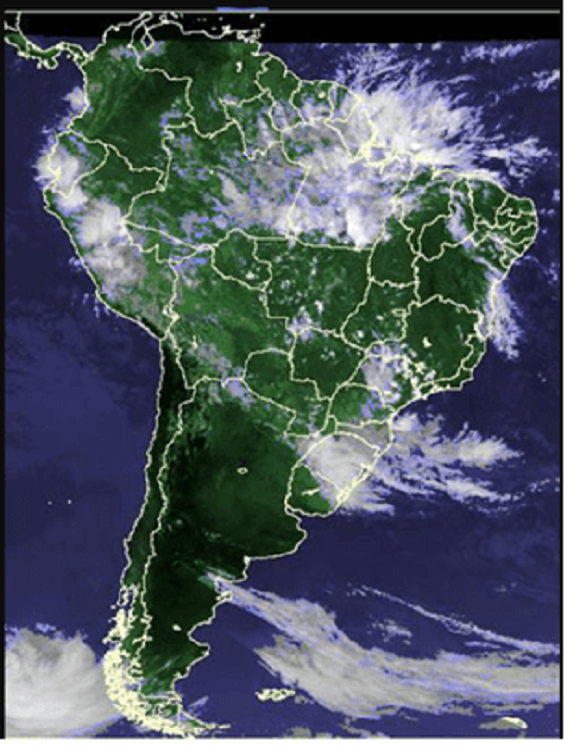
Fonte: Centro de Previsão do Tempo e Estudos
Climáticos, do Instituto Nacional de Pesquisas Especiais (Cptec/Inpe).
A previsão do tempo é um dos exemplos mais conhecidos do uso das imagens de satélites.
Essas imagens auxiliam os meteorologistas por meio das sucessivas imagens das massas de ar, distribuição das
nuvens, a prever períodos de chuva ou seca e a chegada de furações, fundamentais para a defesa civil.
Tudo isso não seria possível sem o sistema de satélites que cobre a Terra.
Sistema de posicionamento global - Formado pelas letras iniciais
(acrônimo do inglês) de Global Positioning System. Utiliza da comunicação entre os satélites (em órbita) e
um aparelho receptor (na Terra) para enviar dados de posição geográfica (Latitude e Longitude).
O GPS foi desenvolvido pelo Departamento de Defesa dos EUA no ano de 1973. Trata-se de um
sistema de rádio navegação que determina a posição bi ou tridimensional de um ponto qualquer da superfície
terrestre. Ele pode ser utilizado 24h por dia, já que o sistema funciona com cerca de 24 satélites orbitando a Terra.
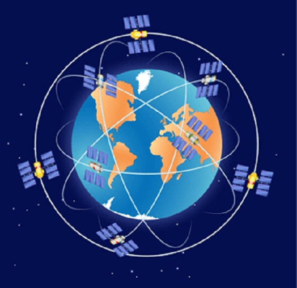
Fonte: https://www.infoescola.com,.
As principais aplicações do GPS são:
Aviação: civil e militar;
Navegação: marítima e comercial;
Esportes; rally, balonismo, corrida de aventura etc.;
Rastreamento de frotas, veículos e animais;
Agricultura de precisão;
Geodinâmica – movimento da crosta terrestre;
Topografia – definição de limites, áreas etc;
Coleta de dados de dados para Sistema de Informação Geográfica, dentre outras.
O sistema é formado por três segmentos: espacial, controle e usuários.
Segmento espacial
Constituído por 24 satélites em 6 órbitas (4 satélites em cada);
Altitude aproximada de 20.200km;
Mínimo 4 satélites visíveis em qualquer local da Terra em qualquer hora.
Segmento de controle
Constituído por 5 estações principais de controle, sendo uma central (Colorado, E.U.A)
(Colorado, E.U.A). Confira:
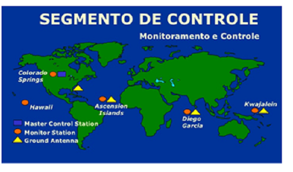
Fonte: Fonte: Escola naval.
Monitoram continuamente os satélites;
Determinam e atualizam as posições orbitais;
Preveem a trajetória nas próximas 24h.
Segmento de usuários
Refere-se a tudo que diz respeito a comunidade usuária, civil e militar.;
- Receptores;
- Programas de processamento;
- Métodos e técnicas de levantamentos; (Oliveira, 2011).
Atualmente há dois sistemas de GPS em operação: um norte-americano, o Navstar e um russo,
o Glonass, ambos começaram durante a Guerra Fria
Os satélites cumprem órbitas fixas e estão dispostos de modo que, de qualquer ponto da
superfície terrestre, seja possível receber ondas de rádio de pelo menos quatro dos 24 satélites.
Os receptores fixos ou móveis, como nos automóveis, captam essas ondas e calculam as
coordenadas geográficas do local em graus, minutos e segundos.
Além da latitude e da longitude, é possível obter a altitude do ponto de leitura, o que
contribui para a produção de mapas topográficos e a hora local com exatidão. (Sene e Moreira, 2016).
Por que aprender a se localizar?
Devido ao potencial estratégico dessa tecnologia ligada ao posicionamento e navegação
semelhantes ao GPS, novos sistemas estão sendo desenvolvidos pela China, o BeiDou e pela
União Europeia como o Galileo.
O BeiDou (que significa ‘Ursa Maior’, em chinês) entrou em funcionamento no ano 2000 e
atende o território chinês quando se trata de navegação por satélite.
Em 2020 o sistema se tornou global com 35 satélites, seguido do GPS (32), do Glonass (26) e
do Galileo (26). Pequim assegura que seu sistema terá uma precisão de localização de 10 cm, contra 30 cm do
rival GPS.
A corrida por ser líder nessa tecnologia ocorre, dentre outros aspectos, no potencial
bélico, ou seja, o seu uso para guerras, como as do Golfo (1991), ou mais recentes como no Afeganistão
(2001-2004) ou nos ataques ao Estado Islâmico buscando capturar Osama Bin Laden.
Os aviões não
tripulados eram guiados por GPS e atingiam o alvo com bastante precisão.
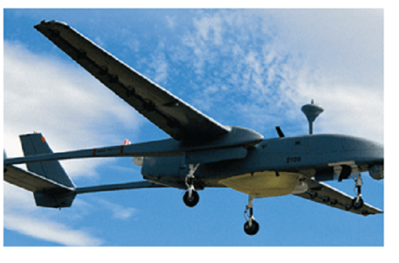
Fonte:
https://istoe.com.br/88385_BATALHA+AEREA/.
Além de guerras, outros setores beneficiados com essa tecnologia são a agricultura de
precisão, os automóveis e os aplicativos de navegação e geolocalização para celulares, tablets, dentre
outros.
No caso da agricultura os usos são diversos. Podemos combinar o uso do GPS com o SIG e
confeccionar mapas digitais sobre fertilidade do solo e, com a localização precisa, distribuir adubo em cada
pedaço da área cultivada, o que pode proporcionar eficácia e economia.
As colheitadeiras e
tratores já vem equipados com SIG e GPS, entretanto o alto custo desses veículos
limita o acesso, principalmente em países subdesenvolvidos e pobres.
O GPS é muito popular e a grande maioria dos automóveis utilizam aplicativos como o Waze ou
o próprio google maps para se localizar, além de facilitar o sistema de entrega de mercadorias e de
transporte de passageiros e de rastreamentos de transporte de cargas em caso de roubos.
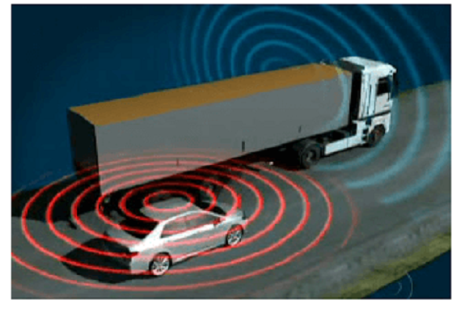
Fonte:
http://www.segurancaportuariaemfoco.com.br
Os órgãos do governo brasileiro utilizam as imagens de satélites e GPS para:
Identificar com exatidão os limites de fazendas improdutivas a serem desapropriadas para reforma
agrária;
Controlar queimadas em florestas e desmatamentos;
Demarcar limites fronteiriços, entre outras finalidades.
Os SIGs no meio técnico-científico-informacional
O espaço geográfico atualmente é muito diferente daquele que seguia estritamente as regras
das leis naturais. Hoje ele é formado por tecnologia, informação e sua infraestrutura é constantemente sendo
renovada pela ação humana.
A informação é o motor da atividade econômica e sua circulação é fundamental para as
tomadas de decisões. Por isso os SIGs estão progredindo rápido nesse meio geográfico, pois permitem sobrepor
camadas de informações com o objetivo
analisar a organização do espaço.
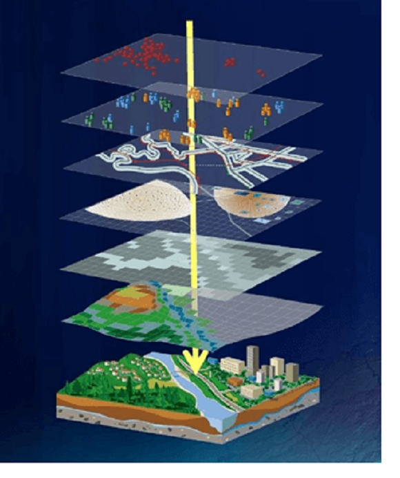
Fonte: Representação das camadas de um SIG.
Pinterest:
Os SIGs são formados
por equipamentos (hardware) e programas (software) que processam dados georreferenciados, ou seja,
localizados territorialmente por coordenadas geográficas e identificadas por GPS.
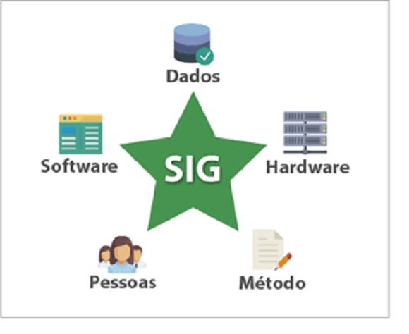
Fonte:
Fonte: www.geoaplicada.com
O programa mais utilizado é o ArcGIS, versão paga, mas há softwares livres como o Spring do
INPE e o QGIS.
Com os dados obtidos de acordo com a localização no território, como renda da população,
dados de desmatamento, dentre outros, é possível produzir mapas temáticos, tabelas, gráficos etc. como no
exemplo abaixo:
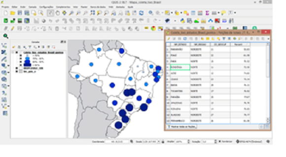
Fonte: Fonte: www.geoaplicada.com
Com esse tipo de mapa ou informações espaciais é possível, dentre outras coisas:
- Planejar onde deve ser investido o dinheiro público, um novo hospital ou uma obra de
saneamento básico;
- Levantar quantos imóveis existem no município;
- Organizar o tráfego urbano, melhorar o trajeto dos transportes públicos;
- Localizar atividades turísticas etc.
Não existe pergunta boba! A Ciência é feita de perguntas!
P:Qual a velocidade de um satélite?
R: Os satélites em órbita geoestacionária têm um período
de translação de 24 horas, deslocam-se no mesmo sentido de rotação que a Terra e mantêm-se no plano
equatorial. Permanecem, assim, ao longo do tempo, na mesma posição em relação à Terra. A sua altitude é de
cerca de 35 860 km, a sua distância em relação ao centro do planeta é de cerca de 42 230 km e a sua
velocidade de cerca de 11 000 km/h. A sua órbita completa tem aproximadamente 265 300 km. Um satélite em
órbita geoestacionária cobre quase metade da superfície terrestre. Três satélites nesta órbita localizados
nos vértices de um triângulo equilátero com 88 000 km de lado são suficientes para cobrir todo o globo,
excluindo as regiões polares (Fonte: www.Inforpedia.br).
P:Quais tipos de satélites que
existem?
R: O termo “satélite” que vamos conhecer agora é um
sistema formado por módulos, que fica na órbita da Terra ou de qualquer outro planeta, mantendo velocidade e
altitude constantes. Por ser construído pelo homem, é chamado de “artificial”, para se diferenciar dos
satélites naturais, como a Lua, por exemplo. Existem vários tipos de satélites artificiais, com diversas
finalidades, como;
Comunicação (sinais de telefones, internet e televisão);
Navegação (como o GPS);
Meteorológico (monitorar o clima da Terra);
Militar (equipado com câmeras infravermelho)
Exploração do Universo (carrega telescópio)
Observação da Terra (monitorar o território, como o CBERS).(Fonte:
www.inpe.br)
Em grupos de 3 e de, no máximo, 5 estudantes, responda corretamente as 10 questões abaixo
e tente somar 15 globinhos. Algumas perguntas valem mais do que outras.
Instruções: Escreva o nome do seu grupo na lousa (use sua criatividade!),
ao final será constrúido um painel com todas as notas
- As sentenças afirmativas possuem duas alternativas e somente uma resposta correta, que
pode ser: Verdadeiro ou Falso.
OLIVEIRA, Juliano. Conceitos básicos sobre posicionamento por satélites
artificiais. 2011. Disponível em: http://www.dsr.inpe.br
/vcsr/files/
Apresentacao_GPS.pdf. Acesso em 06. fev2021.
Revista Galileu. Qual foi a primeira foto tirada do espaço? Disponível em:
http://revistagalileu
.globo.com.html
SAUSEN, Tania Maria. Desastres naturais e geotecnologias-sensoriamento
remoto, cadernos didáticos nº 2. São José dos Campos, 2008. Disponível em:
http://mtc-m16c.sid.inpe.br
/col/sid.inpe.br.pdf
SENE, Eustáquio de; MOREIRA, João Carlos. Geografia geral e do Brasil:
espaço geográfico e globalização: ensino médio 3. ed. São Paulo: Scipione, 2016.
STEFFEN Carlos Alberto. Introdução ao Sensoriamento Remoto. Disponível em:
http://www3.inpe.br
/unidades/cep/
atividadescep
/educasere/apostila.htm. Acesso em 01.fev.2021.